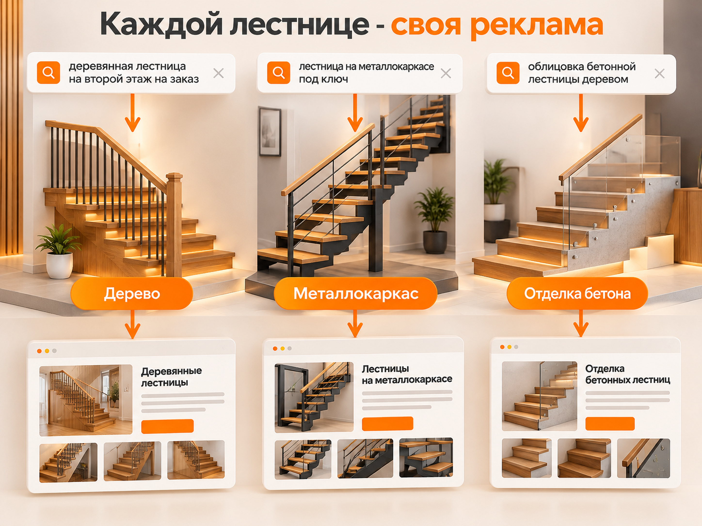
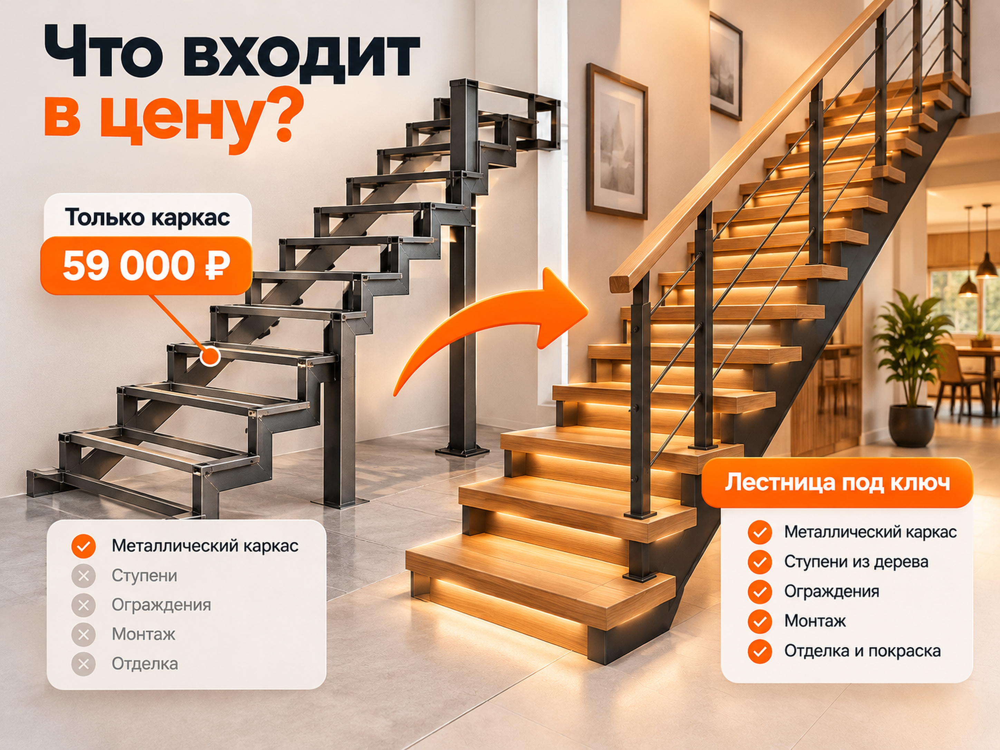

Блог о платном трафике
Реклама и продвижение лестниц на заказ в 2026 году: заявки, бюджет и Яндекс Директ
Для рекламы лестниц на заказ я бы в первую очередь использовал Яндекс Директ на Поиске. Он позволяет привлекать людей, которые уже ищут изготовление, установку или отделку лестницы для своего дома. Дополнительно стоит развивать РСЯ, Яндекс Карты, Авито и SEO.
Но результат зависит не только от рекламных настроек. В этой нише важно разделять разные типы конструкций, показывать реальные работы, объяснять стоимость и отслеживать не просто заявки, а заключённые договоры.
Для первоначального медиаплана можно использовать три расчётных сценария стоимости обращения: 3 000, 6 000 и 10 000 ₽. Это не средние цены рынка, а значения для проверки экономики. В отдельных проектах результат может быть значительно дешевле или дороже.
Главный принцип: сначала рассчитать допустимую стоимость привлечения заказчика, затем определить рекламный бюджет и только после этого запускать кампании.
Кому нужна реклама лестниц и как устроен спрос
Основная аудитория производителей межэтажных лестниц - владельцы строящихся и готовых частных домов. Но потребности клиентов существенно различаются.
Один человек только проектирует дом и пытается понять стоимость будущей лестницы. Другой уже знает размеры проёма и выбирает материал. Третьему нужно обшить готовый металлический каркас, а четвёртый ищет монтажников для установки купленной конструкции.
Для рекламы я бы разделял спрос по нескольким признакам:
- Тип конструкции: деревянная лестница, металлокаркас, монокосоур, облицовка бетонной лестницы, стеклянные ограждения.
- Услуга: проектирование, изготовление, установка, отделка или работа под ключ.
- Объект: частный дом, коттедж, двухуровневая квартира, коммерческое помещение.
- Регион: город и территория, в пределах которой компания готова проводить замеры и монтаж.
- Бюджет: доступные решения, средний ценовой сегмент или премиальное изготовление.
Отдельное направление - пожарные и эвакуационные лестницы. Здесь другая аудитория, чаще B2B, другие требования к конструкции и процессу покупки. Смешивать такое направление с межэтажными лестницами для частных домов не стоит.
В августе 2026 года Яндекс также рекомендовал производителям лестниц использовать отдельные страницы для разных конструкций и учитывать локальный характер спроса.
Где рекламировать изготовление и установку лестниц
Я бы распределял роли рекламных каналов следующим образом.
| Канал | Основная задача | Когда использовать |
|---|---|---|
| Яндекс Директ, Поиск | Получать заявки от людей, которые уже ищут подрядчика | В первую очередь |
| РСЯ | Привлекать дополнительную аудиторию и возвращать заинтересованных посетителей | После подготовки сайта и аналитики |
| Яндекс Карты | Получать локальные обращения и повышать доверие | С самого начала |
| Авито | Привлекать обращения из локального спроса и сравнивать их качество с Директом | Отдельный тест |
| SEO | Получать органический трафик по услугам и информационным запросам | Параллельно, на перспективу |
Для компании, которой нужны заказы на изготовление лестниц, основной платный канал я бы выбирал по доступному объёму сформированного спроса. Если в регионе мало запросов, один Поиск не обеспечит необходимое количество договоров.
Как запустить рекламу лестниц в Яндекс Директе
Я бы начал с узких коммерческих запросов, разделённых по услугам и материалам.
Например:
- изготовление лестниц на заказ;
- лестницы на металлокаркасе под ключ;
- деревянная лестница на второй этаж на заказ;
- установка лестницы в частном доме;
- монтаж лестницы на второй этаж;
- облицовка бетонной лестницы деревом;
- заказать лестницу с установкой.
Добавляются географические формулировки: город, область или конкретная территория обслуживания.
Затем нужно проверить, что стоит за каждым запросом. Фраза «лестница на второй этаж» может означать заказ индивидуального проекта, покупку готового изделия или поиск инструкции для самостоятельного монтажа.
Поэтому семантику следует делить по намерению пользователя, а не просто собирать все фразы со словом «лестница».
Какие запросы отправлять на разные страницы
| Поисковый запрос | Намерение | Посадочная страница |
|---|---|---|
| Лестница на металлокаркасе на заказ | Изготовление конструкции | Лестницы на металлокаркасе |
| Деревянная лестница под ключ | Полный комплекс работ | Деревянные лестницы |
| Монтаж лестницы в доме | Услуга установки | Монтаж лестниц |
| Облицовка бетонной лестницы | Отделочные работы | Отделка бетонных лестниц |
| Лестница на второй этаж цена | Сравнение вариантов и бюджета | Страница вариантов и стоимости |

Не обязательно создавать отдельную рекламную кампанию для каждой строки таблицы. При небольшом бюджете это приведёт к излишнему дроблению статистики.
Но объявления и страницы должны соответствовать конкретной услуге.
Человек, который ищет облицовку бетонной лестницы, не должен попадать на страницу, где рассказывают преимущественно об изготовлении деревянных конструкций с нуля.
Как отсечь нецелевые запросы
В рекламе межэтажных лестниц особенно важна фильтрация информационного и товарного спроса.
Я бы проверял поисковые запросы на следующие нерелевантные направления:
- стремянки, приставные и бытовые складные лестницы;
- чертежи, схемы и инструкции для самостоятельного изготовления;
- готовые конструкции из магазина, если компания их не продаёт;
- вакансии сварщиков и монтажников;
- сериалы, фильмы и прочие нерелевантные значения слова «лестница».
Минус-слова нужно подбирать с учётом ассортимента. Например, слово «винтовая» нельзя исключать, если компания сама изготавливает винтовые лестницы.
После запуска обязательно изучать отчёт поисковых запросов, включая трафик автотаргетинга.
Примеры рекламных объявлений
Для компании, изготавливающей лестницы на металлокаркасе:
Заголовок: Лестницы на металлокаркасе на заказ
Текст: Изготовление и монтаж по индивидуальному проекту. Посмотрите выполненные работы и получите расчёт стоимости.
Для компании, занимающейся отделкой бетонных лестниц:
Заголовок: Облицовка бетонных лестниц деревом
Текст: Подберём материал и вариант отделки под ваш интерьер. Примеры выполненных объектов и расчёт по размерам.
Это примеры структуры объявлений, а не универсальные готовые офферы. Сроки, гарантии, стоимость замера и другие условия необходимо брать из фактического предложения компании.
Как выбрать структуру рекламных кампаний
Отдельные рекламные направления нужны там, где существенно отличаются продукт, аудитория, экономика и посадочные страницы. Но количество кампаний должно соответствовать объёму статистики.
Яндекс рекомендует для работы конверсионных стратегий ориентироваться примерно на 10-20 целевых действий в неделю.
Если рекламный бюджет составляет 100 000 ₽ в месяц, а стоимость обращения достигает 6 000 ₽, расчётное количество заявок составит около 16-17 за месяц.
При таком объёме создавать пять независимых кампаний, каждая из которых оптимизируется по заявкам, обычно нецелесообразно.
Я бы применял следующие правила:
- Разделять Поиск и РСЯ, когда нужно независимо контролировать их бюджеты и эффективность.
- Внутри Поиска выделять группы по типам конструкций и намерениям клиентов.
- Объединять близкие направления, если отдельным кампаниям недостаточно данных для обучения.
- При необходимости объединять совместимые кампании пакетной стратегией.
- Выбирать для оптимизации цель, которая достигается достаточно часто, одновременно оценивая более глубокие CRM-статусы.
Не нужно автоматически включать оплату за конверсии только потому, что она предусмотрена в Директе. Сначала следует проверить качество целей, объём статистики и реалистичность целевой стоимости обращения.
Поиск или РСЯ: что лучше для рекламы лестниц
Для первоначального запуска лестниц на заказ я бы отдавал приоритет Поиску. Здесь проще работать с явным намерением пользователя заказать конкретную конструкцию.
РСЯ полезна для расширения охвата и возвращения потенциальных клиентов, но там особенно важно оценивать качество обращений.
Поиск
Человек вводит запрос «изготовление деревянной лестницы на второй этаж» и видит предложение соответствующего производителя.
В этом случае рекламное объявление должно отвечать на конкретную задачу: какая лестница изготавливается, в каком регионе, что входит в работу и как получить расчёт.
РСЯ
В сетях важно показать сам продукт.
Для рекламы подходят фотографии готовых лестниц в интерьере, интересных металлических конструкций, деревянных ступеней, ограждений и нестандартных проектов.
На изображениях лучше использовать реальные объекты компании, а не универсальные картинки из фотобанков.
В рекламном предложении можно сделать акцент на материале, индивидуальном изготовлении или возможности получить расчёт по размерам.
Ретаргетинг
Лестницу редко заказывают при первом посещении сайта. Человек может сравнивать несколько производителей, обсуждать проект с семьёй или откладывать покупку до завершения строительных работ.
Поэтому можно возвращать в рекламу пользователей, которые посещали портфолио, просматривали стоимость, интересовались конкретной конструкцией или начали заполнять форму расчёта.
Ретаргетинг имеет смысл запускать при наличии достаточной аудитории. Для небольшого регионального сайта его охват может оказаться ограниченным.
Какой сайт нужен для продажи лестниц на заказ
Сайт производителя лестниц должен помогать человеку выбрать конструкцию и понять порядок стоимости ещё до разговора с менеджером.
Для этой ниши я бы предусмотрел пять основных элементов.
Реальное портфолио
Показывать нужно не только красивые интерьеры, но и фактически изготовленные компанией конструкции.
Для каждой работы желательно указать тип лестницы, материалы, особенности проекта и, если возможно, ориентировочную стоимость.
Фотографии с нескольких ракурсов помогают лучше оценить качество изготовления и монтажа.
Понятная стоимость
Указывать фиксированную цену необязательно, если каждый проект индивидуален.
Но посетитель должен понимать примерный ценовой уровень компании.
Если на сайте написано «лестницы от 120 000 ₽», необходимо объяснить, относится ли сумма к каркасу, конструкции без монтажа или готовой лестнице под ключ.
Предварительный расчёт
Для расчёта можно запрашивать тип конструкции, город, высоту между этажами, размеры проёма, материал и фотографию объекта.
Необязательно превращать форму в длинный квиз. Её задача - получить минимум информации для первичной оценки стоимости и связи с клиентом.
Этапы изготовления
Клиенту важно понимать, как будет происходить работа: замер, проектирование, согласование сметы, изготовление, доставка и монтаж.
Это особенно важно при индивидуальном производстве, где между первым обращением и установкой может пройти значительное время.
Подтверждение надёжности
Фотографии производства, отзывы, информация о материалах, гарантийных обязательствах и примеры завершённых объектов помогают снизить неопределённость перед заказом.
Если компания самостоятельно не производит конструкции, не нужно создавать впечатление собственного производства. Лучше точно описать её роль и ответственность.
Почему дешёвые заявки на лестницы могут оказаться невыгодными
Для рекламы лестниц недостаточно измерять стоимость любого обращения. Нужно понимать, сколько заявок соответствует возможностям и ценам производителя.
Показательный пример есть в опубликованном кейсе рекламы металлокаркасных лестниц.
На сайте использовалась формулировка «Изготовление лестницы на металлокаркасе от 59 000 рублей».
Проблема заключалась в том, что цена относилась только к каркасу. Часть посетителей ожидала получить за эту сумму полностью изготовленную и установленную лестницу.
В результате компания получала обращения от людей с неподходящими бюджетными ожиданиями. После корректировки оффера удалось сократить такие обращения.
Этот пример показывает, почему реклама с низкой ценой заявки не всегда эффективна.

Я бы оценивал качество обращений по четырём критериям:
- Клиенту нужна конструкция или услуга, которую выполняет компания.
- Объект находится в зоне обслуживания.
- Сроки заказа соответствуют возможностям производства.
- Ожидаемый бюджет клиента не противоречит реальной стоимости работ.
Квалифицированным лидом в таком случае считается обращение, которое прошло эти проверки.
Важно отдельно считать стоимость первичного обращения, квалифицированного лида, замера и подписанного договора.
Сколько стоит заявка на лестницы в 2026 году
Универсальной рыночной цены заявки на лестницы нет. Стоимость зависит от региона, материала, конкуренции, типа услуги, посадочной страницы и способа учёта обращений.
Для ориентира можно использовать опубликованные примеры, но нельзя автоматически переносить их результаты на новую рекламную кампанию.
Кейс производителя премиальных лестниц в Москве
В опубликованном кейсе компании «Фабрика лестниц Ferum» описывается работа с рекламным бюджетом порядка 200 000 ₽ в месяц.
До оптимизации стоимость лида составляла около 8 000 ₽, а конверсия сайта - 2%.
После комплекса рекламных и технических изменений итоговая стоимость обращения снизилась до 3 200 ₽, а конверсия сайта выросла до 5%.
Средний чек изделий начинался от 400 000 ₽.
Это данные конкретного проекта. Период его реализации не указан достаточно точно, поэтому использовать его CPL как актуальную среднюю цену рынка на октябрь 2026 года некорректно.
Прогноз для стеклянных лестниц в Москве
В апреле 2026 года был опубликован расчёт по рекламе стеклянных лестниц и других конструкций из стекла и стали в Москве и Московской области.
В исходной модели использовались:
- цена клика 170-315 ₽;
- предполагаемая конверсия 1-3%;
- расчётная стоимость заявки приблизительно 5 800-31 500 ₽;
- рекламный бюджет 230 000 ₽.
При этих условиях автор прогнозировал приблизительно 7-40 обращений.
Это не фактическая статистика рекламной кампании. Цифры получены расчётным способом с использованием прогнозной цены клика и предполагаемой конверсии.
Как применять эти данные
Я бы не выбирал одну из опубликованных цен заявки в качестве норматива.
Для новой кампании полезнее составить несколько сценариев, исходя из собственной экономики, а после запуска заменить предположения фактическими данными.
Как рассчитать рекламный бюджет для продажи лестниц
Бюджет на рекламу лестниц нужно рассчитывать от планируемого количества договоров, а не от произвольно выбранной суммы расходов.
Предположим, компании необходимо заключать шесть новых договоров в месяц.
Для учебного примера примем следующие условия:
- 60% первичных обращений проходят квалификацию.
- 25% квалифицированных лидов превращаются в договор.
- Стоимость первичного обращения рассматриваем в трёх сценариях: 3 000, 6 000 и 10 000 ₽.
Это условные параметры модели, а не статистика отрасли.
Сначала рассчитываем количество квалифицированных лидов:
6 / 25% = 24 квалифицированных лида.
Затем определяем количество первичных обращений:
24 / 60% = 40 обращений.
Получается, что для шести договоров требуется 40 первичных обращений при общей конверсии обращения в договор 15%.
Теперь можно рассчитать бюджет.
| Сценарий | CPL первичного обращения | Обращения | Рекламный бюджет | Стоимость договора |
|---|---|---|---|---|
| Сильный | 3 000 ₽ | 40 | 120 000 ₽ | 20 000 ₽ |
| Рабочий | 6 000 ₽ | 40 | 240 000 ₽ | 40 000 ₽ |
| Осторожный | 10 000 ₽ | 40 | 400 000 ₽ | около 66 700 ₽ |
Разница между сценариями существенная, хотя количество договоров одинаковое.
Именно поэтому до запуска необходимо понимать допустимую стоимость продажи. Если бизнес может тратить на заключение одного договора максимум 30 000 ₽, два последних сценария при заданной воронке экономически не подходят.
В таблице учтены только рекламные расходы. Настройка и ведение Директа, разработка сайта, коллтрекинг и другие затраты рассчитываются отдельно.
Какой бюджет нужен на первый тест рекламы лестниц
Первый тест должен дать возможность оценить не только клики, но и качество обращений.
Для предварительного планирования можно определить бюджет на получение первых десяти заявок.
| Предполагаемый CPL | Бюджет на 10 обращений |
|---|---|
| 3 000 ₽ | 30 000 ₽ |
| 6 000 ₽ | 60 000 ₽ |
| 10 000 ₽ | 100 000 ₽ |
Это не минимальные требования Яндекс Директа и не гарантия получения десяти заявок. Это арифметический расчёт при выбранных значениях CPL.
Десяти обращений может не хватить для оценки конверсии в договор и обучения автоматической стратегии. Особенно если квалифицированных лидов окажется существенно меньше.
Поэтому я бы заранее разделял две задачи.
Первая - проверить спрос, посадочную страницу, рекламные запросы и получить первые обращения.
Вторая - накопить достаточно данных, чтобы оценить устойчивую стоимость качественного лида и договора.
Для второго этапа может потребоваться значительно больший бюджет и более длительный период наблюдения.
Подробно общая методика разобрана в статье «Сколько денег нужно на тест Яндекс Директа».
Как определить допустимую стоимость заявки
Допустимая стоимость заявки зависит от прибыли с договора и вероятности заключения сделки.
Сначала нужно посчитать, сколько компания может потратить на привлечение одного заказчика.
Например, после вычета переменных расходов на материалы, изготовление, доставку и монтаж с договора остаётся 100 000 ₽.
Предположим, бизнес готов направлять на рекламу не более 30% этой суммы.
Допустимая стоимость привлечения договора составит:
100 000 × 30% = 30 000 ₽.
Если из всех первичных обращений в договор превращаются 15%, допустимая стоимость обращения будет:
30 000 × 15% = 4 500 ₽.
Это означает, что при заданных условиях реклама с CPL 6 000 ₽ будет превышать выбранный предел расходов на привлечение.
Но для другой компании с большей маржой или более высокой конверсией в договор тот же CPL может оказаться приемлемым.
Поэтому нельзя определять нормальную стоимость заявки на лестницы без информации об экономике конкретного производителя.
Как настроить аналитику рекламы лестниц
Для анализа эффективности необходимо связывать расходы на рекламу с реальными этапами продажи.
Минимально я бы отслеживал:
- Отправки форм расчёта и заявки на замер.
- Телефонные звонки.
- Обращения через мессенджеры.
- Квалификацию лида менеджером.
- Фактически проведённые замеры.
- Отправленные сметы.
- Подписанные договоры.
Если рекламная кампания приводит много звонков, но почти все они заканчиваются вопросом о слишком низкой цене, оптимизация только по звонкам может давать ложное ощущение эффективности.
Полезно передавать в Яндекс Метрику дополнительные статусы из CRM.
Например, менеджер подтвердил бюджет клиента, согласовал выезд замерщика или заключил договор. Такие данные позволяют видеть качество рекламного трафика глубже, чем обычная отправка формы.
Подробнее о механике передачи данных рассказано в материале «Офлайн-конверсии в Яндекс Директ и Метрике».
При выборе цели для автоматической стратегии важно учитывать частоту её достижения. Если договоров всего несколько в месяц, использовать исключительно подписанный договор как цель обучения может быть недостаточно.
В таком случае имеет смысл анализировать более глубокие этапы продаж, но для обучения выбирать цель, по которой набирается достаточный объём данных.
SEO и Яндекс Карты для производителей лестниц
SEO-продвижение лестниц имеет потенциал благодаря разнообразию конструкций и пользовательских запросов.
Для сайта компании полезно создавать отдельные коммерческие страницы под реальные направления:
- лестницы на металлокаркасе;
- деревянные лестницы на заказ;
- лестницы на второй этаж под ключ;
- облицовка бетонных лестниц;
- монтаж лестниц;
- лестничные ограждения.
Информационные материалы могут отвечать на вопросы о стоимости, выборе материалов, размерах проёмов, безопасности конструкций и особенностях разных решений.
Например, человек, который ищет сравнение деревянной лестницы и металлокаркаса, ещё не обязательно готов заключить договор, но уже потенциально относится к целевой аудитории производителя.
В Яндекс Картах стоит разместить фотографии выполненных объектов, услуги, адрес, контакты, режим работы, информацию о компании и отзывы.
Карточка особенно полезна для подтверждения локального присутствия. Перед заказом дорогой конструкции человеку важно убедиться, что компания действительно существует и работает в его регионе.
Стоит ли рекламировать лестницы на Авито
Авито можно рассматривать как дополнительный канал привлечения заказчиков на изготовление и установку лестниц.
Для него важны реальные фотографии, понятное описание услуги, стоимость или принцип её расчёта, а также регион выполнения работ.
Я бы разделял объявления по востребованным направлениям, если это допускается правилами площадки и не создаёт дублирующих предложений.
Но сравнивать Авито с Яндекс Директом только по стоимости контакта неправильно.
Контакт, полученный из объявления, ещё не означает, что человек готов заказать индивидуальную конструкцию по реальной цене компании.
Поэтому для обоих каналов нужно использовать одинаковые критерии квалификации и сравнивать стоимость заключённого договора.
Какие показатели контролировать после запуска
Для производителя лестниц я бы использовал единую таблицу рекламной эффективности.
| Показатель | Что позволяет понять |
|---|---|
| Расходы | Сколько потрачено на привлечение |
| Первичные обращения | Сколько контактов получила компания |
| CPL | Стоимость одного обращения |
| Квалифицированные лиды | Сколько обращений подходят бизнесу |
| Стоимость квалифицированного лида | Сколько стоит подходящий потенциальный заказчик |
| Замеры | Сколько потенциальных заказов дошло до выезда специалиста |
| Договоры | Сколько обращений завершилось продажей |
| Стоимость договора | Сколько рекламы потребовалось для одной продажи |
| Выручка и маржа | Насколько выгодны привлечённые заказы |
Дополнительно стоит анализировать эффективность отдельных типов лестниц, регионов, рекламных каналов, посадочных страниц и объявлений.
Если после оптимизации средняя стоимость обращения снизилась, но количество прибыльных договоров тоже сократилось, улучшением такой результат считать нельзя.
Основные ошибки в рекламе лестниц
Чаще всего проблемы возникают не из-за одного неправильного параметра, а из-за несоответствия между рекламой, предложением и экономикой компании.
Я бы в первую очередь проверял следующие ошибки:
- Реклама всех типов лестниц с одинаковыми объявлениями.
- Использование одной универсальной страницы для разных услуг.
- Привлечение товарного и информационного спроса вместо заказчиков изготовления.
- Указание цены каркаса как цены всей лестницы.
- Отсутствие реальных фотографий работ и понятного принципа расчёта стоимости.
- Дробление небольшого объёма конверсий между множеством кампаний.
- Отсутствие отслеживания звонков и статусов CRM.
- Оценка рекламы только по средней стоимости лида.
- Отсутствие обратной связи от менеджеров о качестве обращений.
Особенно важно анализировать причины отказов.
Если большое количество клиентов уходит после получения сметы, проблема может быть не только в настройках рекламы. Возможно, объявление формирует неверные ценовые ожидания или посетители не понимают позиционирование компании.
Пошаговый план продвижения лестниц на заказ
Для запуска рекламы я бы использовал следующую последовательность.
- Определить основные направления производства и установки, средний чек и географию работы.
- Рассчитать маржу, допустимую стоимость договора и минимально приемлемую конверсию в продажу.
- Подготовить посадочные страницы под основные виды лестниц.
- Добавить реальные фотографии, информацию о цене, составе работ и форму предварительного расчёта.
- Подключить Яндекс Метрику, отслеживание звонков и передачу данных в CRM.
- Собрать коммерческие запросы и запустить рекламу на Поиске.
- Проверять поисковые запросы, качество обращений и соответствие рекламных предложений реальным услугам.
- При достаточном бюджете тестировать РСЯ, ретаргетинг и дополнительные направления спроса.
- Развивать присутствие в Яндекс Картах, SEO и при необходимости на Авито.
- Масштабировать кампании по стоимости и прибыльности заключённых договоров, а не только по CPL.
Итог: сколько стоит реклама лестниц и как получать заказы
Для рекламы лестниц на заказ в 2026 году я бы использовал Яндекс Директ как основной платный инструмент привлечения сформированного спроса.
Начинать стоит с коммерческих запросов на изготовление и монтаж, отдельных посадочных страниц по основным конструкциям и понятного предложения по стоимости.
В опубликованных кейсах встречаются существенно различающиеся показатели. В одном проекте премиальных лестниц после оптимизации CPL составлял 3 200 ₽. В апрельском прогнозе для стеклянных лестниц в Москве расчётная стоимость обращения находилась примерно в диапазоне 5 800-31 500 ₽.
Для предварительной оценки можно использовать сценарии CPL 3 000, 6 000 и 10 000 ₽, но итоговый бюджет должен определяться через конверсию в договор и экономику конкретного бизнеса.
Главный показатель эффективности рекламы лестниц - стоимость привлечённого договора, который приносит компании прибыль.
Если вы занимаетесь производством или монтажом лестниц и планируете запускать Яндекс Директ, я могу помочь с оценкой рекламной экономики, подготовкой кампаний, настройкой аналитики и дальнейшим ведением рекламы. Связаться со мной можно через контакты на сайте.